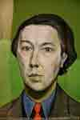
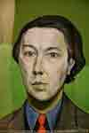

Lecture post-mortem de L'Odyssée par Homère
Homère nous fera le plaisir de nous lire l'introduction de son immense poème épique, le dernier vendredi de ce mois.


Rencontre post-moderne avec un écrivain facétieux
La circonférence à beau être nulle part et le centre partout, l'écrivain post-modern Etienne Lechalbe nous rendra une visite surprise à l'heure et au lieu de son choix.

 
